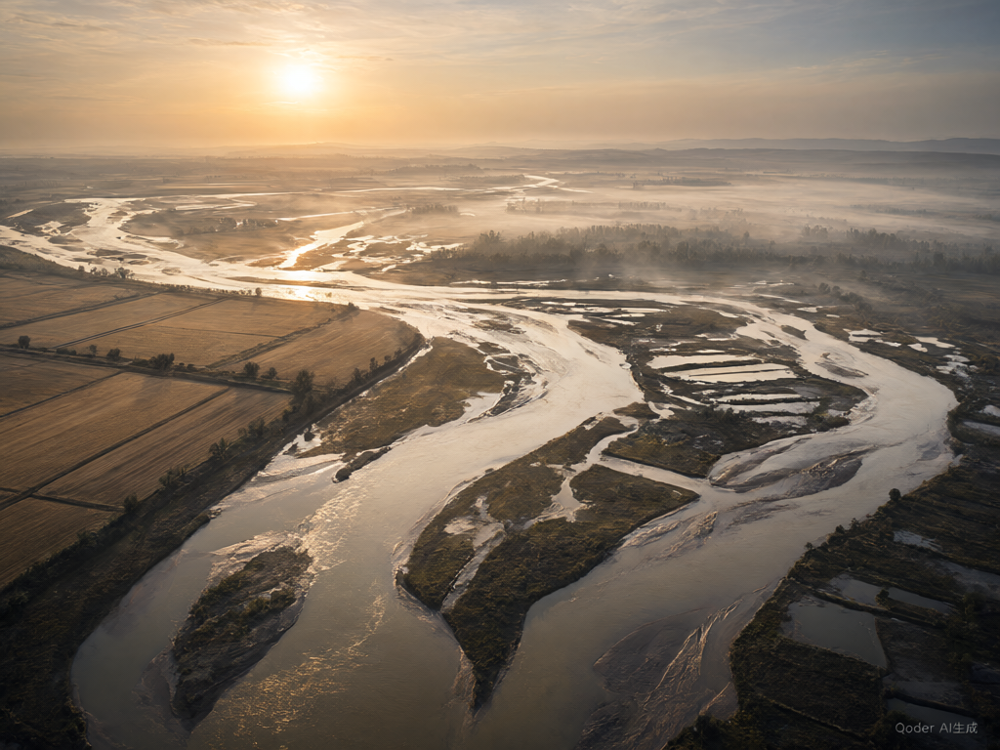

<!doctype html><html lang="zh"><meta charset="utf-8"><meta name="viewport" content="width=device-width,initial-scale=1,user-scalable=no"><title>黄河续响平台</title>
<style>
*{box-sizing:border-box}body{margin:0;background:#f8f3e8;color:#392d27;font:16px system-ui}button,input,select,textarea{font:inherit}button{border:0;border-radius:24px;padding:12px 18px;background:#ac8d59;color:white;cursor:pointer}header{display:flex;align-items:center;justify-content:space-between;padding:16px;background:#fffcf5}h1{font:26px Georgia,serif;margin:0}h2{font:26px Georgia,serif}small,.muted{color:#8b7a66;font-size:12px;line-height:1.7}.tabs{display:flex;gap:8px;overflow:auto;padding:12px;background:#fffcf5;position:sticky;top:0;z-index:4}.tabs button{white-space:nowrap;background:transparent;color:#4a3a2b;padding:9px 16px}.tabs button.active{background:#af9462;color:#fff;box-shadow:inset 0 0 0 3px #d2bc91}main{min-height:80vh}.pad{padding:20px}.card{padding:20px;border-radius:18px;background:#fffaf0;margin-bottom:14px}.hero{background:linear-gradient(125deg,#e5c18c,#f6e8c9);padding:26px;border-radius:20px;overflow:hidden}.map{height:62vh;min-height:370px;position:relative;overflow:hidden;background:#e9ead8;touch-action:none}.map svg{width:100%;height:100%}.map .badge{position:absolute;left:12px;top:12px;padding:7px;background:#fff9e8e8;font-size:11px;max-width:75%;z-index:2}.tools{position:absolute;right:10px;top:65px;display:grid;gap:12px;z-index:2}.tools button{background:#fff;color:#9a7b43;border:2px solid #ddcca9;border-radius:50%;width:54px;height:54px;padding:0;font-size:12px;box-shadow:0 4px 10px #0002}.routeBtn{position:absolute;bottom:18px;left:50%;transform:translateX(-50%);width:94px;height:94px;border-radius:50%;border:6px double #fff;font:23px Georgia;background:#ae9161;box-shadow:0 5px 15px #0003}.pin{cursor:pointer}.pin circle{fill:#fff;stroke:#ac8d59;stroke-width:2}.pin text{font-size:12px;text-anchor:middle}.pin .label{fill:#fff;font-size:11px}.path{stroke-dasharray:12 8;animation:flow 4s linear infinite}@keyframes flow{to{stroke-dashoffset:-80}}.grid{display:grid;grid-template-columns:repeat(2,1fr);gap:14px}.record{border-radius:12px;background:#172536;overflow:hidden;position:relative;color:#fff}.record img{width:100%;height:130px;object-fit:cover}.record .plus{position:absolute;left:10px;top:10px;padding:0;width:32px;height:32px;background:#0008;font-size:25px}.record section{padding:16px}.night{background:#091421;color:#e6efec;min-height:100vh}.night .map{background:#102c37}.night h2{color:#fff}.night .card{background:#142535}.sheet{position:fixed;inset:0;background:#0008;display:flex;align-items:end;z-index:20}.sheet>section{background:#f8f3e8;border-radius:26px 26px 0 0;padding:24px;width:100%;max-height:85vh;overflow:auto}.sheet input,.sheet textarea,input,select{padding:12px;border:1px solid #d8c5a3;border-radius:12px;max-width:100%;background:#fffdf6}.route{display:flex;justify-content:space-between;align-items:center;gap:10px;padding:18px;background:#fffaf3;border:1px solid #decca8;border-radius:16px;margin:12px 0}.discover{display:flex;overflow:auto;gap:20px;padding:28px;scroll-snap-type:x mandatory}.discover article{flex:0 0 87%;height:65vh;border-radius:16px;background:linear-gradient(0deg,#340b0ee6,#4b140133),url('hero.png') center/cover;color:#fff;padding:30px;display:flex;flex-direction:column;justify-content:space-between;scroll-snap-align:center}.discover article:nth-child(2){background:linear-gradient(145deg,#1a3946,#8b7146)}.discover h2{writing-mode:vertical-rl;letter-spacing:10px;font-size:38px;align-self:end}.row{display:flex;gap:10px;align-items:center;justify-content:space-between}.toast{position:fixed;bottom:30px;left:10%;width:80%;background:#342b25ed;color:#fff;padding:15px;border-radius:14px;z-index:40}.miniMap{height:170px;transform:perspective(500px) rotateX(25deg);animation:drift 7s ease-in-out infinite alternate}@keyframes drift{to{transform:perspective(500px) rotateX(35deg) translateY(-7px)}}#three{height:65vh;touch-action:none}canvas{max-width:100%}#cardCanvas{border-radius:12px;width:100%}.danger{color:#a64236}a{color:#967138}@media(prefers-reduced-motion:reduce){*{animation:none!important}}
</style><link rel="stylesheet" href="atlas.css">
<header><button onclick="back()" style="background:transparent;color:#744">‹</button><h1 id="title">黄河文化导览</h1><button onclick="settings()" style="background:transparent;color:#987">⚙</button></header><main id="app"></main><div id="overlay"></div>
<script src="atlas-data.js"></script><script src="atlas.js"></script><script>
const app=document.querySelector('#app'),overlay=document.querySelector('#overlay');
const cats=['发现','建筑','展览','打卡','餐饮','文创','卫生间','游客服务'];
const icons=['✦','⌂','♜','⚑','♨','▣','WC','i'];
let mode='map',category='发现',city='全部',selectedRoute=-1,map=null,scale=1,offset={x:0,y:0};
let records=read('hh-footprints',[]),favorites=read('hh-map-favorites',[]);
function read(k,d){try{return JSON.parse(localStorage.getItem(k))??d}catch{return d}}
function persist(){localStorage.setItem('hh-footprints',JSON.stringify(records));localStorage.setItem('hh-map-favorites',JSON.stringify(favorites))}
function esc(s){return String(s).replace(/[&<>"']/g,c=>({'&':'&amp;','<':'&lt;','>':'&gt;','"':'&quot;',"'":'&#39;'}[c]))}
function toast(t){let el=document.createElement('div');el.className='toast';el.textContent=t;document.body.append(el);setTimeout(()=>el.remove(),3500)}
function back(){if(mode==='map'||mode==='travel'||mode==='model'){if(window.Native)Native.back();else show('travel')}else show('map')}
function sheet(html){overlay.innerHTML='<div class="sheet"><section><button style="float:right" onclick="closeSheet()">×</button>'+html+'</section></div>';overlay.firstChild.onclick=e=>{if(e.target===overlay.firstChild)closeSheet()}}
function closeSheet(){overlay.innerHTML=''}
function show(m){mode=m;closeSheet();document.body.classList.toggle('night',m==='footprints');document.querySelector('#title').textContent={travel:'游黄河',map:'黄河手绘导览',footprints:'黄河足迹',model:'数字文物 · 360°'}[m];if(m==='travel')travel();if(m==='map')mapPage();if(m==='footprints')footprints();if(m==='model')modelPage()}
function settings(){sheet('<h2>地图服务</h2><p>离线示意可直接使用。真实底图和周边检索需要你自己的百度浏览器 AK。</p><input id="ak" placeholder="百度浏览器端 AK" autocomplete="off"><p><button onclick="saveAK()">启用百度地图</button> <button onclick="localStorage.removeItem(\'hh-baidu-ak\');closeSheet();show(\'map\')">离线模式</button></p><small>鸿蒙包内来源为 https://huanghe.example，须按百度控制台规则配置浏览器 AK。AK 只保存在本机。可随时切回离线模式。</small>')}
function saveAK(){let k=document.querySelector('#ak').value.trim();if(!/^[\w-]{10,128}$/.test(k))return toast('请填写有效 AK');localStorage.setItem('hh-baidu-ak',k);closeSheet();show('map')}
function checkin(id){let p=getPOI(id);if(!p)return;city=p.city;addRecord();document.querySelector('#recName').value=p.name;document.querySelector('#recNote').value=p.demo?'示例地点体验记录（非真实到访）':''}
function footprints(){let lit=new Set(records.map(r=>r.city));app.innerHTML=`<div class="pad"><small>手动记录 · 非 GPS 到访认证</small><h2>点亮你的黄河续响</h2>${footprintMap()}<div class="row"><h2>${lit.size} 座城市 · ${records.length} 条记录</h2><button onclick="addRecord()">＋</button></div><small>文化节点示意，非行政区边界地图；足迹保存在本机，暂不包含在档案备份和设备同步中。</small><div class="grid" style="margin-top:20px">${records.map(r=>`<article class="record"><button class="plus" onclick="postcard('${r.id}')">＋</button><section><b>${esc(r.city)}</b><p>${esc(r.name)}</p><small>${new Date(r.date).toLocaleDateString()} · 手动点亮</small><p>${esc(r.note)}</p><button onclick="removeRecord('${r.id}')">删除</button></section></article>`).join('')}</div>${!records.length?'<p>还没有足迹。点击城市或右侧加号记录旅程。</p>':''}</div>`}
function addRecord(){sheet('<h2>记录我的足迹</h2><p><select id="recCity">'+cities.map(c=>`<option ${city===c?'selected':''}>${c}</option>`).join('')+'</select></p><p><input id="recName" maxlength="40" placeholder="探访地点"></p><p><textarea id="recNote" maxlength="180" placeholder="写下一点回忆"></textarea></p><button onclick="saveRecord()">点亮城市</button><p class="muted">手动记录，仅代表你填写的旅行回忆。</p>')}
function saveRecord(){let name=document.querySelector('#recName').value.trim();if(!name)return toast('请填写地点');records.unshift({id:Date.now().toString(36),city:document.querySelector('#recCity').value,name,note:document.querySelector('#recNote').value,date:new Date().toISOString(),demo:false});persist();show('footprints')}
function removeRecord(id){sheet('<h2>删除这条足迹？</h2><p>记录与对应明信片将从本机移除。</p><button onclick="confirmRemove(\''+id+'\')">确认删除</button> <button onclick="closeSheet()">保留记录</button>')}
function confirmRemove(id){records=records.filter(r=>r.id!==id);persist();closeSheet();footprints()}
function postcard(id){let r=records.find(r=>r.id===id);if(!r)return;sheet('<h2>黄河明信片</h2><canvas id="cardCanvas" width="700" height="1000"></canvas><p><button onclick="shareCard()">分享明信片</button> <button onclick="exportCard()">保存图片</button></p>');let c=document.querySelector('#cardCanvas'),x=c.getContext('2d');x.fillStyle='#fff8e9';x.fillRect(0,0,700,1000);let im=new Image();im.onload=()=>{x.drawImage(im,35,35,630,480);drawCardText(x,r)};im.onerror=()=>drawCardText(x,r);im.src='hero.png'}
function drawCardText(x,r){x.fillStyle='#522c28';x.font='44px serif';x.fillText('黄河续响平台',45,580);x.font='36px sans-serif';x.fillText(r.city,45,660);x.font='25px sans-serif';x.fillText(r.name.slice(0,22),45,710);for(let i=0;i<Math.min(3,Math.ceil(r.note.length/22));i++)x.fillText(r.note.slice(i*22,(i+1)*22),45,770+i*36);x.font='20px sans-serif';x.fillText(new Date(r.date).toLocaleDateString()+' · 手动点亮',45,940);x.strokeStyle='#ac8d59';x.lineWidth=3;x.beginPath();x.arc(570,590,70,0,Math.PI*2);x.stroke();x.fillStyle='#ac8d59';x.font='24px serif';x.fillText('黄河足迹',522,600)}
function shareCard(){let png=document.querySelector('#cardCanvas').toDataURL('image/png');if(window.Native)Native.shareImage(png);else toast('请在鸿蒙应用中使用系统分享')}
function exportCard(){let png=document.querySelector('#cardCanvas').toDataURL('image/png');if(window.Native)Native.saveImage(png);else{let a=document.createElement('a');a.href=png;a.download='黄河明信片.png';a.click()}}
function modelPage(){app.innerHTML='<div class="pad"><h2>中国瓷瓶 · 数字鉴赏</h2><p class="muted">公开 CC0 扫描模型；资源转载页标注来源 Smithsonian。与河南出土器物无对应关系。</p><div id="three"></div><p id="modelStatus">正在加载离线 3D 模型…</p><button onclick="window.resetModel?.()">复位视角</button> <button onclick="window.toggleRotate?.()">自动旋转／暂停</button><p class="muted">单指拖动旋转，双指缩放；模型是实物三维扫描，不是全景照片。</p></div>';import('./viewer.js').then(m=>m.mount()).catch(e=>{document.querySelector('#modelStatus').textContent='3D 引擎加载失败：'+e.message})}
window.startExperience=(m)=>show(m||'map');show('map');
</script></html>
